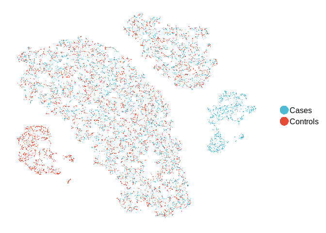
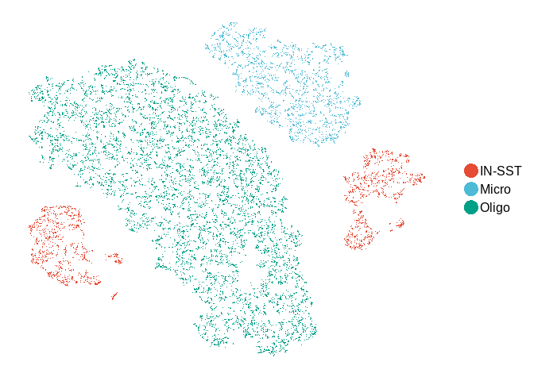

The goal of scFlow is to provide tools in R to build a complete analysis workflow for single-cell/nuclei RNA sequencing data.
- Quality control of gene-cell matrices
- Filtering of matrices by counts and features
- Filtering of mitochondrial genes and mitochondrial counts thresholding
- Doublet and multiplet identification and removal with DoubletFinder
- Rich QC metrics annotation with scater
- Dimensionality reduction and celltype identification
- Louvain clustering, UMAP dimensionality reduction, and cluster marker gene identification with monocle
- Celltype annotation with EWCE and Liger
- Cluster identity mapping against the Allen Human Brain Atlas and Mouse Nervous System Data from Zeisel 2018
- Differential gene expression implementations
- Pathway and functional category enrichment analysis
- Interface to the Enrichr database with EnrichR
- Interface to the WebGestalt tool with WebGestaltR
- Publication quality plots and analysis reports
- QC plots and tabular metrics suitable for reports.
- UMAP plots for cell features and gene expression.
- Violin plots for gene expression.
- Pathway and gene enrichment plots
The package functions are designed to interface neatly with NextFlow for scalable and containerized pipelines deployed locally, on high-performance computing clusters, or in the cloud. An accompanying NextFlow pipeline is in the works - TBA.
Installation
You must have hdf5 setup on your system to run this. If using linux, run “sudo apt-get install libhdf5-dev”.
You can install the development version of scFlow from GitHub with:
An additional data package scFlowData will be needed which contains supplimentary data required for gene annotaion, cell type annotation, pathway analysis. Install that with:
Developers
You may need to install scFlow using a Personal Access Token (Github->Settings->Developer Settings): -
See this page on the wiki for a full explanation. For dependecy related issues check this link.
Preprocessing example dataset
Preparing data for scFlow
library(scFlowExamples)
indvExp <- scFlowExamples::indvExp
# Create a folder to store the 10xGenomics matrix format data
output_path <- "~/tmp_ZeiselSCFLOW"
dir.create(output_path)
for (i in 1:length(indvExp)) {
x <- indvExp[[i]]$exp
# Convert gene symbols from mouse to human
# Limit genes to Mouse:Human orthologs
# Convert human gene symbols to Ensembl gene IDs
x <- mouse_symbol_to_human_ensembl(x)
# Write the data
output_file <- sprintf("%s/individual_%s", output_path, i)
DropletUtils::write10xCounts(output_file, x,
barcodes = colnames(x), gene.id = rownames(x),
gene.symbol = rownames(x), gene.type = "Gene Expression", overwrite = TRUE,
type = "auto", genome = "unknown", version = "3"
)
}Create the manifesto file for scFlow
y <- ids::proquint(n = length(indvExp), n_words = 1L, use_cache = TRUE, use_openssl = FALSE)
z <- data.frame(key = y, filepath = sprintf("%s/%s", output_path, list.files(output_path, pattern = "individual")), stringsAsFactors = FALSE)
write.table(z, file = sprintf("%s/Manifest.txt", output_path), row.names = FALSE, col.names = TRUE, quote = FALSE, sep = "\t")Create the sample sheet for scFlow
dx <- unlist(lapply(indvExp, FUN = function(x) {
return(x$dx)
}))
sex <- sample(c("M", "F"), length(dx), replace = T)
age <- sample(1:100, length(dx))
sample_sheet <- cbind(manifest = z[, 1], individual = rownames(z), diagnosis = dx, sex = sex)
write.table(sample_sheet, file = sprintf("%s/SampleSheet.tsv", output_path), row.names = FALSE, col.names = TRUE, quote = FALSE, sep = "\t")For a detailed explanation on how scFlowExample dataset was generated, visit this link.
Running scFlow
The scFlow pipeline requires three main input: a folder containing matrix.mtx.gz, features.tsv.gz, barcodes.tsv.gz for individual samples, a SampleSheet.tsv file which is a tab-separated-variable file with sample metadata and a Manifest.txt file is a tab-separated-variable file with two columns: key and filepath. Details of how to generate the files is given in this page
The basic scFlow workflow for sample QC begins with the import of the feature-barcode sparse matrix with read_sparse_matrix. The metadata for the sample is then imported from a sample sheet with read_metadata. A SingleCellExperiment object is created from the matrix and the metadata using generate_sce which is then annotated with both gene and cell-level data using annotate_sce. We then filter the SingleCellExperiment to select only cells and genes meeting our QC criteria using filter_sce. We can then optionally find singlets in our filtered SingleCellExperiment using find_singlets before filtering them out again with filter_sce. A complete QC report can then be generated using report_qc_sce before saving the filtered and quality-controlled SingleCellExperiment with write_sce.
Step one - import the matrix and metadata
matrix_fp <- "path/to/matrix/file"
samplesheet_fp <- "path/to/SampleSheet.tsv"
ensembl_fp <- paste(system.file("extdata", package = "scFlowData"), "/", "ensembl_mappings.tsv", sep = "")Next we retrieve the metadata by pointing to a Sample Sheet and specifying a unique identifier (unique_key) in a specific column (key_colname):
metadata <- read_metadata(
unique_key = "fonij",
key_colname = "manifest",
samplesheet_path = samplesheet_fp
)
#> ══ Retrieving sample metadata ════════════════════════════════════════════════════════════════════════════════════
#> Reading /home/nfancy/R/x86_64-pc-linux-gnu-library/3.6/scFlowData/extdata/vignette_data/SampleSheet.tsv
#> ✔ Four metadata variables loaded for manifest='fonij'
#> manifest: fonij (factor)
#> individual: 1 (integer)
#> diagnosis: Cases (factor)
#> sex: F (factor)For downstream analyses it’s important that the variable classes are correctly specified. Carefully inspect the metadata classes in brackets. In the above example we see that the individual were imported as integer rather than factor variables. Let’s correct this by reloading the metadata, this time specifying the correct variable classes for this variable:-
var_classes <- c(
individual = "factor"
)
metadata <- read_metadata(
unique_key = "lodut",
key_colname = "manifest",
samplesheet_path = samplesheet_fp,
col_classes = var_classes
)With the metadata imported with the correct variable classes, and the previously loaded sparse matrix, we can generate our SingleCellExperiment object:-
The SingleCellExperiment object was succesfully created and we can now proceed with annotation.
Step two – Annotate the SingleCellExperiment
In scFlow we specify all of our QC preferences and cutoffs with the annotate_sce command. This will also produce plots in the sce@metadata slot allowing rapid revision and optimization of QC parameters. Let’s start with the default parameters by simply providing the SingleCellExperiment object to the annotate_sce function:-
A list of QC plots are available to browse in the sce@metadata$qc_plots, e.g.

After running annotate_sce we may examine the plots and assess whether the applied thresholds are sensible for the sample. The effects of different parameters can be explored by iterating through the above generate_sce and annotate_sce functions until satisfied with the settings.
The next step is to filter the SingleCellExperiment with filter_sce: -
Step three – Finding singlets and discarding multiplets
At this stage we may wish to identify singlets in the SingleCellExperiment and discard any multiplets. In scFlow we simply run find_singlets and specify our preferred multiplet identification algorithm. Here we will use doubletfinder (This will take a while depending on the cell numbers):-
sce <- find_singlets(sce, "doubletfinder", pK = 0.005, vars_to_regress_out = c("nCount_RNA", "pc_mito"))Now we can filter out these multiplets with filter_sce:-
You can see the remaining cells after all the filtering done by:
Finally we produce a report with report_qc_sce (this takes a few minutes): -
And save our SingleCellExperiment: -
Step four – Merging multiple datasets into one SingleCellExperiment object
Follow step one-three for all individual samples and save them using write_sce function. Then we read the individual SingleCellExperiment using read_sce into a list and merge them using merge_sce function.
sce_path <- dir(
path = "/path/to/dir",
pattern = "sce_individual",
full.names = TRUE
)
sce_pathlist <- list()
for (i in sce_path) {
sce_pathlist[[i]] <- i
}
sce_list <- lapply(sce_pathlist, read_sce)
sce_merged <- merge_sce(
sce_list,
ensembl_mapping_file = ensembl_fp
)Then we write the merged SingleCellExperiment object.
Step five – Dimension reduction and clustering
Once we merge all the samples into one SingleCellExperiment object we can move to the next steps of dimension reduction and clustering. Here dimension reduction is performed using multiple methods by default i.e. “PCA”, “tSNE”, “UMAP”, “UMAP3D”. Once the dimension reduction step is done the SingleCellExperiment object is ready for clustering.
We can now plot tSNE:-

The next step is to cluster all the cells using cluster_sce command.
We can then plot the clusters:-

The next step is to annotate the celltypes for each cluster. Here, we will use the package ewce. For this we use the following command (This may take a while):-
sce_merged <- map_celltypes_sce(sce_merged,
ctd_folder = paste(system.file("extdata", package = "scFlowData"), "/", "ctd", sep = "")
)The celltypes for each cell can be found in sce_merged@colData$cluster_celltype slot. We can also generate tSNE plot for each celltype.

Step six – Performing differential expression analysis following by impacted pathway analysis
We need to subset the merged SingleCellExperiment object to perform differential expression analysis. Here we are using MASTZLM for differential expression analysis. For example, we are interested in performing DE analysis in the IN-SST cell cluster. So, we first subset the IN-SST cluster.
We need to specify the colData column name as dependent_var as the variable of interest for DE analysis. For example here we want to perform DE analysis between Case and Controls which is found in diagnosis column. ref_class is the reference group for DE analysis. If there are any confounding variables those colData names can be passed through confounding_vars argument.
result_de <- perform_de(
sce_subset,
dependent_var = "diagnosis",
ref_class = "Controls",
confounding_vars = c("cngeneson", "sex"),
ensembl_mapping_file = ensembl_fp)result_de is a list of DE tables. If there are more than one group to be compared against the reference (here Controls) group they will all be merged into the result_de@Controls_Merged_Results slot.
head(result_de$Controls_vs_diagnosisCases, 5)
#> ensembl_gene_id pval logFC ci.hi ci.lo gene_biotype
#> 1 ENSG00000122585 2.080333e-146 3.672375 3.922793 3.421956 protein_coding
#> 2 ENSG00000109846 0.000000e+00 2.467718 2.547119 2.388317 protein_coding
#> 3 ENSG00000125869 0.000000e+00 2.337181 2.407184 2.267177 protein_coding
#> 4 ENSG00000128683 2.249204e-300 1.880722 1.972310 1.789133 protein_coding
#> 5 ENSG00000102804 9.839248e-288 1.812161 1.900221 1.724101 protein_coding
#> gene percentage_gene_gc_content padj contrast
#> 1 NPY 43.41 3.934699e-144 diagnosisCases
#> 2 CRYAB 46.12 0.000000e+00 diagnosisCases
#> 3 LAMP5 42.77 0.000000e+00 diagnosisCases
#> 4 GAD1 45.82 2.056147e-297 diagnosisCases
#> 5 TSC22D1 38.08 6.746034e-285 diagnosisCases
#> reference model
#> 1 Controls ~diagnosis+cngeneson+sex
#> 2 Controls ~diagnosis+cngeneson+sex
#> 3 Controls ~diagnosis+cngeneson+sex
#> 4 Controls ~diagnosis+cngeneson+sex
#> 5 Controls ~diagnosis+cngeneson+sexWe have implimented both topology based and non-topology based pathway enrichment analysis. Here we will use ROntoTools and WebGestaltR respectively.
enrichment_result_webgestaltr <- pathway_analysis_webgestalt(
gene_file = result_de$Controls_vs_diagnosisCases,
enrichment_method = "ORA",
project_name = TRUE,
additional_enrichment_databse = FALSE,
is_output = FALSE,
output_dir = "~/"
)enrichment_result_webgestaltr$pathway_KEGG[1:5, c(1,2,8,9)]
#> geneSet description pValue FDR
#> 25 hsa03010 Ribosome 0.000000e+00 0.000000e+00
#> 53 hsa04723 Retrograde endocannabinoid signaling 6.661338e-15 4.360034e-13
#> 63 hsa04727 GABAergic synapse 1.285971e-11 7.081007e-10
#> 74 hsa05032 Morphine addiction 1.045983e-09 4.903399e-08
#> 79 hsa04725 Cholinergic synapse 4.169939e-09 1.831078e-07
enrichment_result_webgestaltr$plot$pathway_KEGG
set.seed(1234)
enrichment_result_rontotools <- pathway_analysis_rontotools(
gene_file = result_de$Controls_vs_diagnosisCases,
project_name = TRUE,
enrichment_database = c("kegg", "reactome", "nci", "panther"),
is_output = TRUE,
output_dir = "~/"
)enrichment_result_rontotools$kegg[1:5, c(1,2,6,7)]
#> geneSet description pValue FDR
#> 1 hsa:00010 Glycolysis / Gluconeogenesis 0.004975124 0.01129865
#> 2 hsa:00120 Primary bile acid biosynthesis 0.004975124 0.01129865
#> 3 hsa:00230 Purine metabolism 0.004975124 0.01129865
#> 4 hsa:00410 beta-Alanine metabolism 0.004975124 0.01129865
#> 5 hsa:00430 Taurine and hypotaurine metabolism 0.004975124 0.01129865
enrichment_result_rontotools$plot$kegg